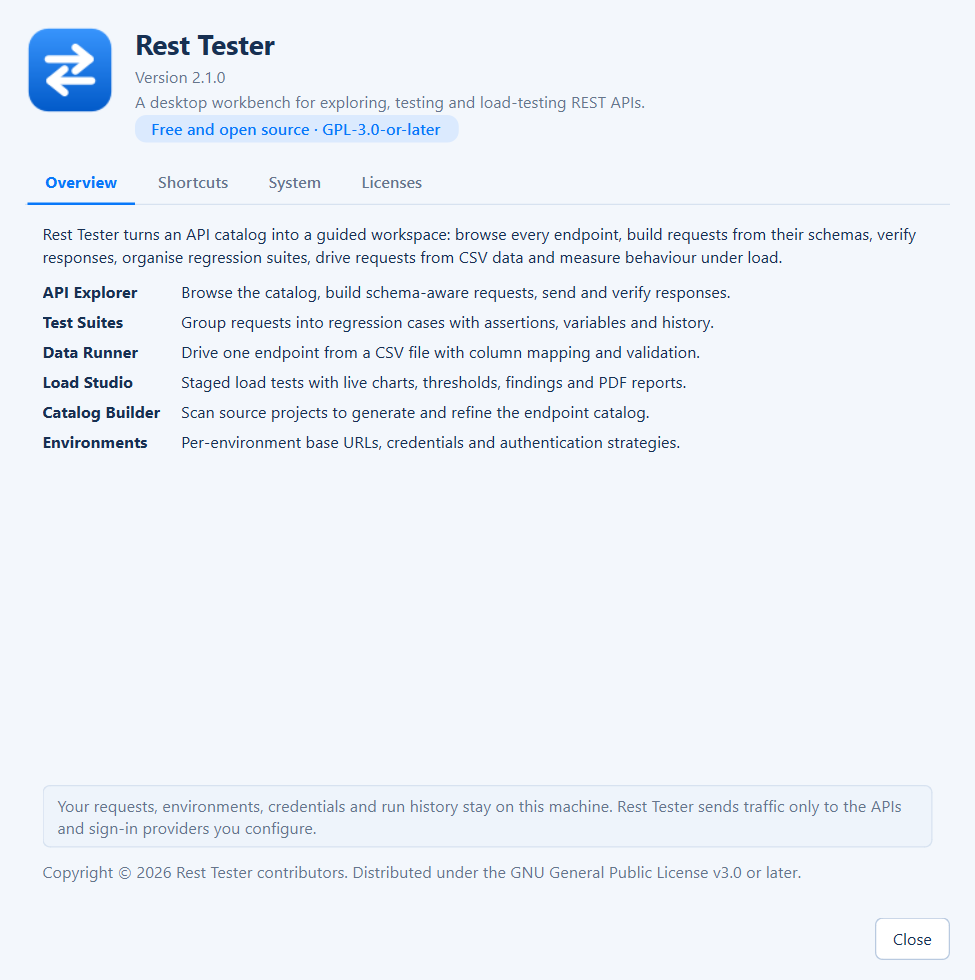

Schema first
Forms, filters, sorts and assertions come from the catalog, so requests only use fields an endpoint really supports.
About the project
Generic API clients treat every request as a blank form. Rest Tester starts from a catalog of your services, so it knows which fields exist, which can be filtered and sorted, which values an enum allows and what a valid response looks like.
Rest Tester is a desktop application for exploring, testing and load-testing REST APIs. One catalog drives six workspaces: the API Explorer, Test Suites, the Data Runner, Load Studio, the Catalog Builder and Environments.
It is aimed at developers and testers who repeatedly exercise the same set of services - checking a new filter, reproducing a bug with real data, building a regression suite before a release or checking that a change still holds up under load.

Forms, filters, sorts and assertions come from the catalog, so requests only use fields an endpoint really supports.
No account and no cloud. Settings, history, suites and runs are plain files and SQLite databases on your machine.
Load tests have caps for users, duration and timeout, and the Data Runner validates every row before sending.
Results come with timelines, schema diffs and diagnosed shortcomings with likely causes and fixes.
Application logic, catalog parsing, the filter grammar and the load engine.
The native desktop interface with light and dark themes and charts.
HTTP with timing breakdowns, plus Microsoft identity, OAuth 2.0 and signed JWT authentication.
Workspace history, saved requests and portable run files for the Data Runner and Load Studio.
Rest Tester is licensed under the GNU General Public License v3.0 or later.
You may use, study, share and modify Rest Tester. If you distribute a modified version, you must make its source available under the same license. See the LICENSE file and the full GPL-3.0 text.
| Component | License |
|---|---|
| PyQt6 / Qt | GPL-3.0 |
| requests | Apache-2.0 |
| MSAL, msal-extensions | MIT |
| PyJWT | MIT |
| cryptography | Apache-2.0 OR BSD-3-Clause |
Bug reports, ideas and pull requests are welcome.
requirements-dev.txt and make your change with tests.python -m pytest with QT_QPA_PLATFORM=offscreen.